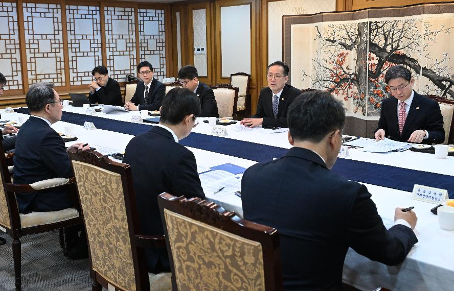
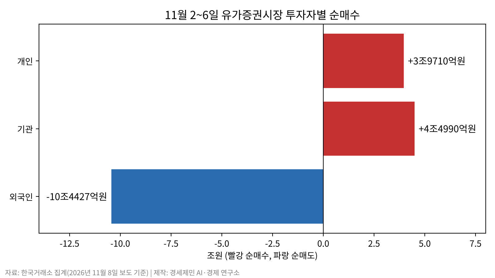
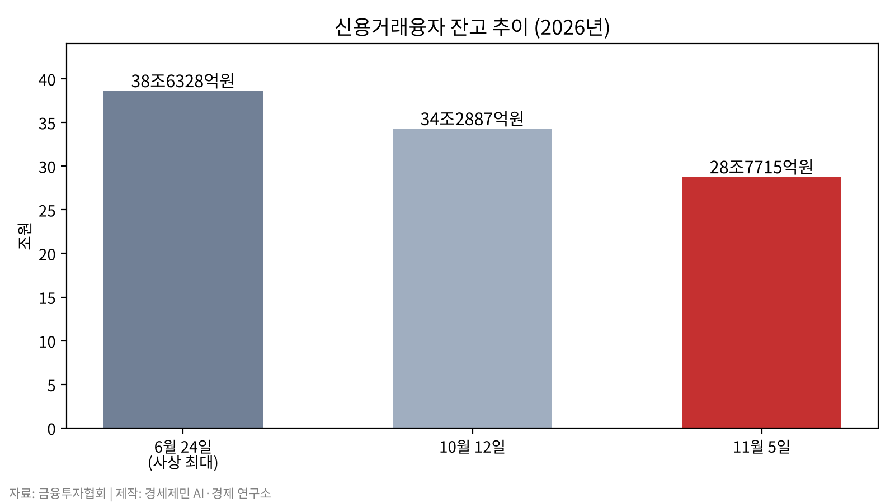
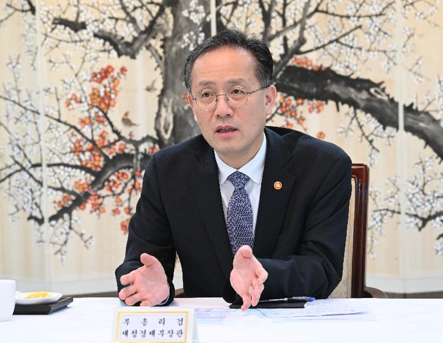

[주식공부] 담보비율 140% 석 달 면제, 개인 빚은 그대로
외국인 10조원 넘게 판 한 주, 개인은 4조원 가까이 순매수
신용융자 이자 연 9%대, 10대 증권사 1분기 이자 약 6000억원
담보비율 면제 시한 2027년 1월 31일, 원금과 이자는 계좌에

AI경제저널=김갑봉 기자 | 정부가 증권사 신용융자 담보비율 유지의무(140%)를 9일부터 3개월간 면제하기로 했다. 이형일 부총리 겸 재정경제부 장관은 6일 정부서울청사에서 관계기관 합동 시장상황점검회의를 열어 이같이 정했다. 이억원 금융위원장, 이찬진 금융감독원장, 권민수 한국은행 부총재가 참석했다.
재정경제부는 보도자료에서 면제 이유를 "주가 급락에 따른 과도한 반대매매로 시장의 변동성이 증폭되는 상황을 방지하기 위해"라고 밝혔다. 반대매매는 빚을 내 산 주식의 가격이 떨어져 담보가 모자랄 때 증권사가 투자자 동의 없이 주식을 팔아 빚을 거둬들이는 것을 말한다.
금융감독원과 금융투자협회는 면제 기간을 11월 9일부터 2027년 1월 31일까지로 정했다. 금융감독원은 비조치의견서를 발급한다. 비조치의견서는 규정을 지키지 않아도 제재하지 않겠다는 감독당국의 문서다.
신용공여는 증권사가 투자자에게 주식을 살 돈을 빌려주는 것을 말한다. 금융투자업규정은 증권사가 신용공여금액의 140% 이상을 담보로 받도록 한다. 담보 가치가 증권사가 정한 유지비율 밑으로 떨어지면 추가 담보를 요구하도록 한다. 이번 면제 대상은 이 담보비율 유지의무다. 신용융자 원금과 이자를 갚을 의무는 면제 대상이 아니다.
코스피 11.71% 하락 한 주의 매매

코스피는 10월 30일 5730.74에서 11월 6일 5059.69로 한 주 동안 11.71% 내렸다(한국거래소). 6일에는 장중 4911.28까지 밀렸다.
재정경제부는 보도자료에서 미국 중간선거 이후 글로벌 증시 변동성이 커졌다고 밝혔다. 11월 5일(현지시각) 미국 나스닥은 5.52%, 필라델피아 반도체지수는 12.25% 내렸다. 참석자들은 인공지능(AI) 데이터센터 규제 우려를 하락 요인으로 꼽았다. "AI 산업을 둘러싼 정책 불확실성과 글로벌 투자심리 위축 등이 복합적으로 작용"했다고 진단했다.
같은 한 주 유가증권시장에서 외국인은 10조원 넘게 순매도했다. 개인은 4조원 가까이, 기관은 4조4000억원 넘게 순매수했다(한국거래소 집계, 11월 8일 보도 기준). 개인과 기관의 순매수를 합쳐도 외국인 순매도보다 2조원 가까이 적었다.
빚으로 산 주식의 강제 매도는 10월에도 불어났다. 금융투자협회 집계로 미수금 반대매매는 10월 14일 하루 893억원이었다. 7월 31일(1220억원) 이후 가장 많았다. 미수금은 주식을 사고 결제일까지 내지 못한 돈이다.
연 9%대 이자, 어디로 흐르나
신용융자는 증권사가 주식을 담보로 개인에게 빌려주는 돈이다. 금융투자협회 공시로 대형 10개 증권사의 비대면 신용융자 90일 초과 구간 금리는 연 9.10~9.60%였다(2026년 5월 11일 보도 기준). 이 가운데 증권사가 시장금리를 따라 정하는 기준금리는 2.77~2.82%, 증권사가 얹는 가산금리는 평균 6.60%였다.
증권사 이자수익은 늘었다. 10대 증권사의 2026년 1분기 신용융자 이자수익은 약 6000억원이었다. 1년 전 3846억원보다 55.9% 늘었다(각 사 분기보고서). 같은 기간 10대 증권사 순이익에서 신용융자 이자수익이 차지하는 비중은 18.7%에서 13.8%로 낮아졌다. 순이익이 이자수익보다 더 빠르게 늘었다.

증권업계 신용공여금은 2025년 6월 말 45조원에서 2026년 6월 말 63조9000억원으로 42.2% 불었다(나이스신용평가). 신용거래융자 잔고는 6월 24일 38조6328억원으로 사상 최대를 기록했다(금융투자협회). 10월 12일에는 34조2887억원이었고, 11월 5일 28조7715억원으로 줄었다. 10월 고점보다 5조5172억원(16.1%) 적다. 줄어든 잔고에는 투자자가 갚은 돈과 반대매매로 강제 정리된 돈이 함께 들어 있다.
담보비율 의무가 면제돼도 이자는 날마다 붙는다. 대형 10개 증권사의 90일 초과 구간 금리를 적용하면 1000만원에 하루 2493~2630원의 이자가 붙는다(기자 계산).
증권사마다 다른 유예와 문턱
담보유지비율을 얼마나 낮출지는 증권사가 정한다. 미래에셋증권은 국내 주식 담보유지비율을 140%에서 130%로 낮췄다. 상장폐지 위험이 있는 관리종목과 정리매매 종목은 160%를, 해외 주식은 140%를 유지했다. NH투자증권은 별도 동의한 고객에 한해 반대매매 대상 선정 기준을 국내 주식 140%에서 130%로, 해외 주식 170%에서 160%로 낮췄다. 다만 반대매매 수량은 기존 140%·170% 기준으로 계산한다.
한국투자증권은 석 달간 유예 제도를 운영한다. 신청 고객의 반대매매를 1영업일 미룬다. 담보비율 120~130% 고객은 한 번, 130~140% 고객은 매일 신청해 연장할 수 있다.
삼성증권은 9일 하루 담보유지비율을 10%포인트 낮추고 이후 고객 신청 체계를 만든다. 키움증권은 담보비율 130~140% 구간 신청 고객에게 하루를 유예한다.
빚을 새로 내는 문턱은 그보다 앞서 높아졌다. 자기자본 3조원 이상 대형 증권사인 종합금융투자사업자는 10월 1일부터 신용공여 잔고를 법정 한도인 자기자본의 100%보다 낮은 90% 안에서 자율로 관리한다. 삼성증권은 10월 삼성전자 신용보증금률을 45%에서 50%로 올렸다. 보증금률은 빚을 내 주식을 살 때 투자자가 자기 돈으로 먼저 내야 하는 몫이다.
연구가 잰 신용거래 개인의 손익
자본시장연구원 김민기 연구위원은 이슈보고서 「개인투자자 신용융자거래 현황과 특징 분석 및 시사점」(2022년 1월)을 냈다. 거래비용을 넣은 신용거래자의 누적수익률은 5.9%로, 신용거래를 하지 않은 투자자보다 10.4%포인트 낮았다. 신용 포지션으로 이익을 낸 신용거래자는 33.5%였다. 보고서는 "소액투자자는 레버리지 활용으로 인해 오히려 손실 규모가 확대되었을 것으로 추정된다"고 적었다.
같은 연구원 이효섭 선임연구위원은 「개인투자자의 레버리지 투자 현황 및 시사점」(2026년 8월)을 냈다. 6월 말 신용잔고는 36조7000억원으로 2016년 말의 5.5배였다. 레버리지 상장지수펀드(ETF) 순자산은 39조4000억원으로 13.1배였다. 그는 "주가가 담보유지비율을 밑도는 수준까지 하락하면 반대매매가 출회되고" 하락을 키울 수 있다고 썼다. 보고서는 "고위험 레버리지 상품에 대한 진입 규제 강화를 검토할 필요가 있다"고 제언했다.
자본시장연구원 보고서 「국내 증시 신용거래 현황 및 시사점」(홍지연, 2026년 5월)은 신용거래가 경기를 따라 움직인다고 분석했다. 하락장에서는 반대매매가 매도 압력을 키운다. 개인 비중이 높고 위험을 피할 수단이 미국보다 적어, 레버리지가 청산될 때 가격 변동이 더 클 수 있다고 봤다.
담보비율 의무 면제는 처음이 아니다. 금융위원회는 2020년 3월 16일부터 6개월간, 2022년 7월부터 그해 12월 31일까지 같은 의무를 면제했다. 면제 전후 반대매매 금액을 견준 공식 통계나 연구는 확인되지 않았다.
2020년 면제 때도 다른 목소리가 있었다. 정용택 당시 IBK투자증권 리서치센터장은 "이번 정책은 급락장을 막는 효과가 분명 있을 테지만, 주가가 더 떨어지게 될 경우에는 투자자들의 손실 폭도 더욱 커지는 것"이라고 말했다.
정부 설명과 MSCI 관찰대상국

김상봉 한성대 경제학과 교수는 "이번 담보규제 완화 조치가 과도한 반대매매에 따른 추가 주가 하락을 막는 데 도움이 될 수 있다"고 말했다. 이어 "담보비율을 탄력적으로 적용할 수 있도록 한 것은 적절한 대응"이라고 했다. 증권시장안정펀드 투입 같은 추가 조치에는 "일시적인 변동성 확대만으로 광범위한 제도 변경에 나서는 것은 바람직하지 않다"며 신중한 입장을 보였다.
면제 전 시장에서는 매도 압력을 걱정하는 목소리가 나왔다. 이영곤 토스증권 리서치센터장은 10월 "주가가 추가 급락할 경우 일부 자금이 담보유지비율을 맞추지 못하게 되고, 이는 시장 수급에 매도압력으로 작용하게 될 것"이라고 말했다.
정부는 경제 기초체력을 근거로 들었다. 회의 참석자들은 "금년 3% 중반 성장, 수출 1조불 달성 및 기업 영업이익 900조원 돌파 전망 등 우리 경제의 펀더멘털은 그 어느 때보다도 견조"하다고 봤다. 이어 "과도한 불안심리에 따른 지나친 비관은 경계할 필요가 있다"는 데 의견을 같이했다. 변동성이 더 커지면 시장 안정을 위한 추가 조치를 준비하기로 했다. 기업가치 제고와 자본시장 신뢰 제고로 "자본시장의 체질을 근본적으로 개선"하는 노력도 이어 가기로 했다.
한국은 2026년 6월 모건스탠리캐피털인터내셔널(MSCI, 미국 지수 산출 기관) 연례 시장분류에서 선진지수 관찰대상국에 다시 오르지 못했다. MSCI는 "원화는 역외에서 인도되지 않는다(not deliverable offshore)"고 밝혔다. 투자자들이 "근본 문제가 완전히 해소되지 않았다"고 전했다는 설명도 붙였다. 한국은 2008년부터 2014년까지 관찰대상국이었다.
담보비율 유지의무 면제는 2027년 1월 31일 끝난다. 면제 기간에도 신용융자 원금과 이자 상환 의무는 개인투자자에게 남는다.
참고문헌
- 재정경제부, 보도자료 「국내외 주식시장 변동성 확대로 단계별 대응조치 가동」(누리집 게시 제목 「긴급 시장상황점검회의 개최」), 2026.11.6., https://www.mofe.go.kr/nw/nes/detailNesDtaView.do?searchBbsId1=MOSFBBS_000000000028&searchNttId1=MOSF_000000000079890&menuNo=4010100
- 금융투자협회 법규정보시스템, 금융투자업규정 제4-25조(담보비율 등), https://law.kofia.or.kr/service/law/detailArticlePrint.do?seq=284&historySeq=1097&contentSeq=136612
- 금융위원회, [보도참고] 「금융시장 합동점검회의 개최 및 증시 변동성 완화조치 연장」, 2022.9.23., https://www.fsc.go.kr/no010101/78589
- MSCI, "MSCI Announces the Results of the MSCI 2026 Market Classification Review", 2026.6.23., https://www.businesswire.com/news/home/20260623223577/en/MSCI-Announces-the-Results-of-the-MSCI-2026-Market-Classification-Review
- 김민기, 「개인투자자 신용융자거래 현황과 특징 분석 및 시사점」, 이슈보고서 22-01, 자본시장연구원, 2022.1., https://www.kcmi.re.kr/common/downloadw.php?fid=25214&fgu=002002&fty=004003
- 이효섭, 「개인투자자의 레버리지 투자 현황 및 시사점」, 자본시장포커스 2026-16호, 자본시장연구원, 2026.8.10., https://www.kcmi.re.kr/publications/pub_detail_view?syear=2026&zcd=002001016&zno=1929&cno=6824
- 홍지연, 「국내 증시 신용거래 현황 및 시사점」, 자본시장포커스 2026-09호, 자본시장연구원, 2026.5.4., https://www.kcmi.re.kr/publications/pub_detail_view?syear=2026&zcd=002001016&zno=1912&cno=6757
- 노정동, 「내일부터 반대매매 일단 '숨통'…증권사 담보비율 140% 의무 3개월 면제」, 한국경제, 2026.11.8., https://www.hankyung.com/article/2026110830387
- 이승용, 「증시 급락에 반대매매 부담 낮춘다···금감원, 담보비율 규제 3개월 완화」, 시사저널e, 2026.11.8., https://www.sisajournal-e.com/news/articleView.html?idxno=424873
- 최윤선, 「'빚투' 5.5조 빠졌는데 28조 남았다…반대매매 막아도 불안한 증시」, 아주경제, 2026.11.8., https://www.ajunews.com/view/20261108135701490
- 이한나, 「빚투 38.6조원 '사상 최대'…반대매매도 161% 폭증」, SBS Biz, 2026.6.25., https://biz.sbs.co.kr/amp/article/20000318902
- 신성우, 「투자자예탁금 100조원 하회…반대매매는 900억원으로 급증」, SBS Biz, 2026.10.15., https://biz.sbs.co.kr/amp/article/20000340230
- 강수윤(뉴시스), 「불장에 증권사 '이자장사' 신용금리 9% 돌파…삼성·미래·KB 등 가산금리 최고」, 파이낸셜뉴스, 2026.5.11., https://www.fnnews.com/news/202605111100001641
- 김태종(연합뉴스), 「역대최고 '빚투'에…10대증권사 1분기 '빚투 이자수익' 6천억」, 파이낸셜뉴스, 2026.5.17., https://www.fnnews.com/news/202605170705507416
- 양태훈, 「[증시 쇼크] ③ 정부, 시장안정책 다시 시험대…반대매매 부담만 줄여」, 뉴스핌, 2026.11.6., https://www.newspim.com/news/view/20261106000686
- 양태훈, 「신용매수 막고 보증금률 올리고…증권사 '빚투' 관리 강화」, 뉴스핌, 2026.10.19., https://www.newspim.com/news/view/20261019001152
- 신하은, 「대형사는 회사채, 중소형사는 단기사채…빚투가 가른 증권사 조달 여력」, 메트로신문, 2026.10.21., https://www.metroseoul.co.kr/article/20261021500270
- 김제이, 「금융위 반대매매 유예 정책 '더 큰 손실 조장' 논란」, 뉴시스, 2020.3.14., https://www.newsis.com/view/NISX20200313_0000955303
- 주원규, 「지수 반등에 베팅… 34조까지 불어난 빚투」, 파이낸셜뉴스, 2026.10.14., https://www.fnnews.com/news/202610141810193650
- 이승연·박소연, 「공포의 외인구단… 닷새간 10조 던지자 5천피 털썩」, 서울신문, 2026.11.8., https://www.seoul.co.kr/news/economy/securities/2026/11/09/20261109029001
사진 출처
- 재정경제부 사진뉴스, 「이형일 부총리, 긴급 시장상황점검회의 주재」, 2026.11.6., https://www.mofe.go.kr/nw/mosfnw/photoDetail.do?searchNttId1=MOSF_000000000079887&menuNo=4010400 (공공누리 제4유형, 원본 그대로 사용)
- [사진1]·[사진2] 재정경제부 사진뉴스(2026.11.6), 공공누리 제4유형, 원본 그대로
도표 출처
- [도표1] 경세제민 AI·경제 연구소 작성, 자료 한국거래소 집계(2026년 11월 8일 보도 기준)
- [도표2] 경세제민 AI·경제 연구소 작성, 자료 금융투자협회
※ 이 기사는 인공지능기자 위민아이(Wemin_AI)와 협력해 작성했습니다.
관련기사
- [주식공부] 코스피 12.13% 하락, 자사주 끊긴 자리에 선 개인
- [주식공부] 코스피 18.45% 하락, 반등을 받친 건 자사주
- [금융시장 브리핑①] 삼성전자·SK하이닉스 단일종목 레버리지 출시 80일, 개인 손실 6조3130억원
저작권자 © AI경제저널 무단전재 및 재배포, AI학습 및 활용 금지